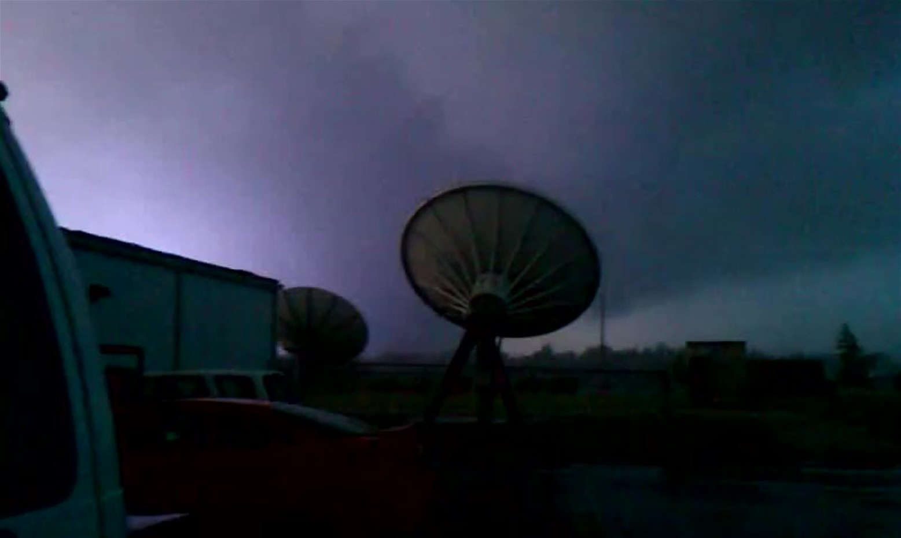
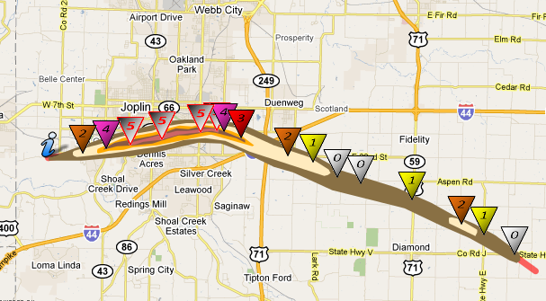
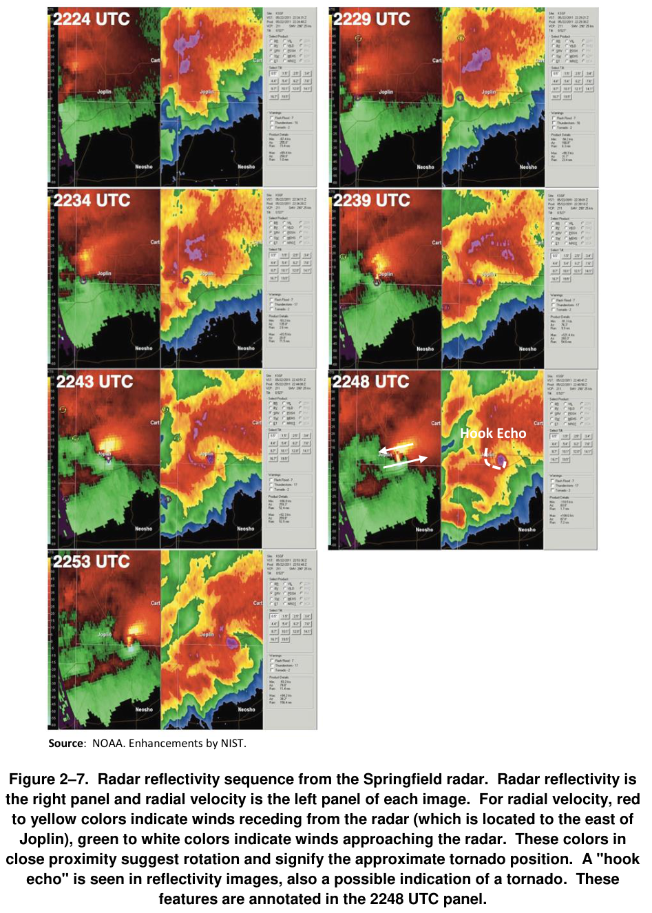
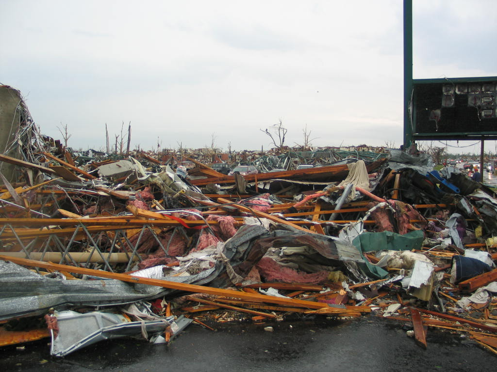
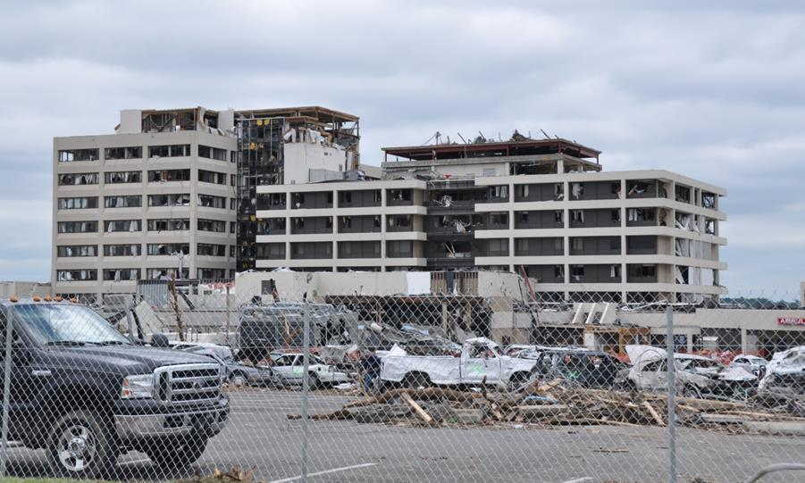
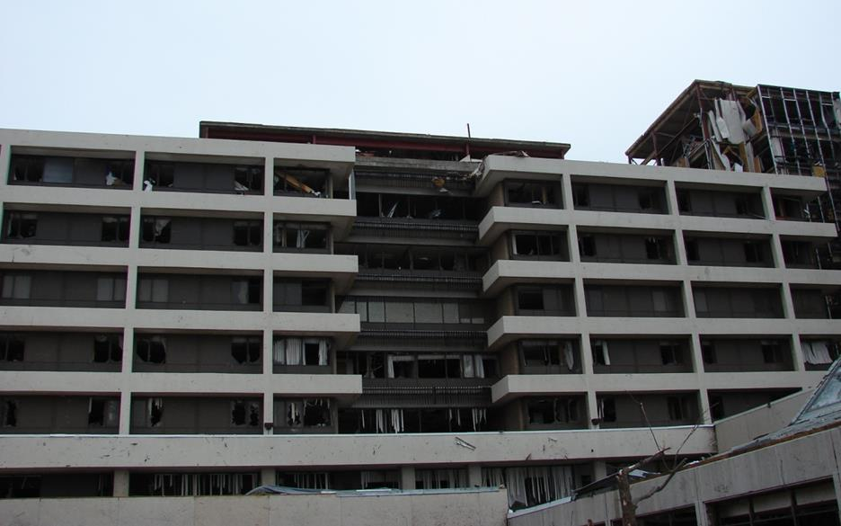
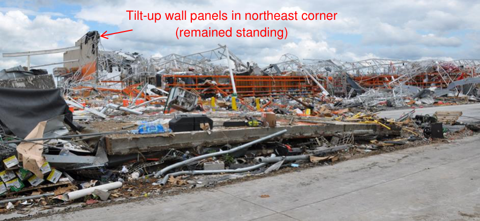
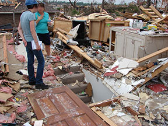
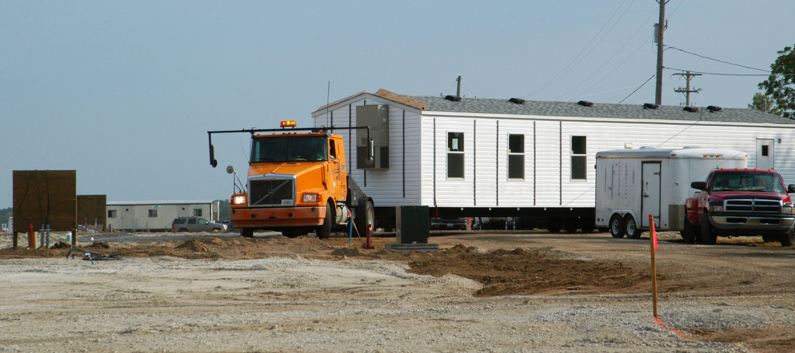

A city in the path.
The tornado, the warnings, the buildings and the people. Joplin's history needs all four.
On a Sunday afternoon, a supercell moving from southeast Kansas into southwest Missouri produced the tornado that crossed Joplin. The NWS account describes a hot, humid day and an EF5 tornado. The following investigation asked how such a severe loss of life occurred despite advance warnings. NWS anniversary account · NIST investigation

- Rating
- EF5 NWS assessment
- Whole path
- 22.1 miles NWS July 2011 report
- Maximum width
- Up to 1 mile Whole-event maximum
This is the first documented Joplin chapter. The historical source map is available below. Individual damage locations, a checked list of names and a timed visual reconstruction are still being researched.
The threat developed before the first siren.
The SPC had identified severe-weather potential more than two days ahead. On the morning of May 22, Joplin was included in a Moderate Risk area. The NWS review describes extreme atmospheric instability and sufficient low-level wind shear for tornadoes. Those conditions supported concern about dangerous storms, but an outlook could not identify a particular future street-level path.
At 1:30 p.m. CDT, Tornado Watch 325 included Joplin. Later, warning staff recognized tornado potential in the approaching storm. The NWS assessment also describes rapid development near the city's southwest edge and a delay in recognizing the tornado's exceptional size and violence. NWS assessment, printed pages 18–20
What was known, and when.
Times below are the event's local Central Daylight Time. They come from the NWS assessment's chronology, not from a new synchronization of every recording. The approximate touchdown time keeps that qualification. NWS assessment, printed pages 2–3
Explore this warning chronology on the shared clock. Each entry links to its report page. No geographic or camera registration is implied.
Tornado watch
SPC issues a watch covering southwest Missouri, including Joplin, through 9 p.m.
The first warning area
Warning 30 covers western Jasper County, including northeastern Joplin. It is not interchangeable with the next warning's coverage.
The first siren alert
A three-minute alert sounds for Jasper County and Joplin.
A warning including Joplin
Warning 31 covers southwest Jasper County and Joplin, northwest Newton County and southeast Cherokee County, Kansas.
Initial touchdown
The assessment places touchdown southwest of Joplin, approximately half a mile southwest of JJ Highway and Newton Road.
Second siren alert
Another three-minute alert sounds. The chronology places the beginning of EF4 damage near the approach to Schifferdecker Avenue.
Warning coverage extends east
Warning 32 includes southern Jasper County, Joplin, northern Newton County and western Lawrence County.
Seeing a tornado was not the same as receiving a warning.
The photograph above provides one view of the storm. Satellite dishes and vehicles fill the foreground, with a dark storm behind them and a bright flash at the left. Commons attributes the photograph to Daniel Friskey and describes a power flash. Those visible details do not locate the camera or measure the tornado's width. The flash does not supply a checked timestamp.
NIST's retrospective reports that many of the survivors it interviewed looked for visual confirmation. Heavy rain obscured the tornado, while local news coverage focused on a storm north of town. This finding comes from an investigation involving 140 survivor interviews. It is distinct from the smaller NWS interview sample discussed below. It does not describe every resident's view or explain an individual death. NIST, Emergency Communication Is Key · Inspect the visibility finding and its limits.
The aftermath photograph answers a later question. Broken timber, insulation and bent metal show damage already present. Its source associates the scene with Joplin, but the exact location has not been registered. The two photographs are separate views with different clock evidence, rather than a matched before-and-after pair. The warning chronology records reported alert times. Neither photograph fills the missing time between those alerts and a particular building failure.
A path through the city and beyond.
The NWS report gives a whole-track length of 22.1 miles and a maximum width of one mile. It describes roughly six miles of EF4 and EF5 damage from near Schifferdecker Avenue toward Interstate 44. Those distances describe different parts of the event. They should not be substituted for one another. NWS assessment, printed page 1


The catalogue retains the Jasper and Newton County records separately. Their aliases link them to this account without adding their death totals together or replacing their original ratings. Inspect the source records.
Two measurements above a damaged city.
Radar measured the storm above the buildings.
A radar picture and a damage photograph answer different questions. NIST's report preserves seven snapshots from the Springfield radar, with radial velocity on the left and reflectivity on the right. Their printed UTC labels run from 2224 to 2253 on May 22, 2011. They are selected observations, rather than every radar update. Original report, Figure 2-7, printed page 29.


In each velocity panel, red and yellow indicate motion away from the radar, while green and white indicate motion toward it. NIST highlights nearby opposite velocities and a hook echo in the 2248 UTC pair as signs of rotation and approximate tornado position. The two color displays represent different measurements. A bright patch does not assign a wind speed to a building.
The report explains a substantial height gap. The relevant radars were approximately 100 kilometers from the storm. Even their lowest beam elevation sampled roughly 1.5 kilometers above the ground, far above the buildings being damaged. NIST therefore used indirect methods to estimate winds nearer the surface, including damage-based inference and a wind model fitted to observed tree falls. Those estimates remain distinct from the measurements shown here. Sampling limits, printed page 28 · Indirect estimates, printed page 30.
This item uses the report's item-specific rights statement and NOAA's content guidance, with both agency credits preserved. No government endorsement is implied. The printed radar labels do not register a camera, an optical appearance interval or a street-level wind field.
More than a wind-speed number.
NIST investigated wind loading, debris, building performance, emergency messages and the decisions people made. Its final report contains 47 findings and 16 recommendations. Understanding survival required examining those factors together. NIST final report overview



The damage photograph shows the outcome, but it cannot establish the original construction, anchorage, sequence of failures or wind speed by itself. NIST's retrospective describes failed windows at the hospital, poorly performing large retail buildings and roof loss at a nursing home. It also distinguishes ordinary refuge areas from engineered storm shelters. NIST's ten-year retrospective
A standing frame did not mean a working hospital.
At St. John's Regional Medical Center, NIST found no structural damage to the West Tower's concrete frame or floor slabs. Its windows, exterior walls and interior had a different outcome. Breaches allowed wind, water and debris inside. NIST attributed the overall window damage to a likely combination of wind pressure and debris impact, rather than a single established cause. Original report, printed page 97.


The tower lost control of its interior environment, lighting and elevator movement. NIST concluded that damage to the envelope and interior would have prevented its operation even without the electrical outage. Structural survival and continued hospital function were different questions. This is the investigation's historical finding, not a current assessment of another hospital or building code. Original report, printed page 99.


The report identifies those fifth-floor windows as breakage resistant, but its investigators could not locate their renovation drawings and specifications. The photographs are useful evidence of differing outcomes, not a controlled experiment proving why every window survived or failed. Both figure photographs are attributed to NIST under the report's item-specific rights statement. No government endorsement is implied.
A roof also kept the walls upright.
The hospital's standing concrete frame was one kind of outcome. The Home Depot case asks a different question: what happened when the roof that spanned a large retail space disappeared? NIST describes a steel roof system that carried vertical loads and also braced the building's concrete perimeter walls and interior frames against sideways movement. The roof was part of their support, not simply a cover above them. Original report, printed page 132.


The photograph shows missing roof, displaced steel members and fallen panels after the storm. It cannot show which connection failed first. In a section titled Possible Failure Sequence, NIST proposes that wind uplift broke connections between roof joists and girders, removing critical lateral bracing. Many wall panels that then lacked sideways support collapsed. Some panels with positive connections to their footings remained standing. The report also describes three standing panels that appeared to receive support from exterior steel shelving. These are the investigation's interpretations of damage and available design information. Original report, printed page 138.
That distinction matters when reading damage photographs. A standing part of one building and a collapsed part of another do not make a controlled comparison of their materials, winds or occupants' experiences. This photograph is not a measured wind speed, a timed collapse sequence or current construction advice. The report's item-specific rights statement identifies NIST as the source for figures without another credit. Atlas hosts this figure with attribution, while separately credited drawings and aerial imagery remain in the original report. Read the exact source and reuse record.
Surviving refuge areas are not an occupant survival record.
NIST's school case studies separate major damage elsewhere in a building from the condition of its designated refuge areas. At East Middle School, six refuge areas had only minor roof covering damage despite collapse of the gymnasium and auditorium. NIST described protective construction features and lower estimated winds over much of the refuge portion as the likely explanation for their performance. The school was unoccupied. That outcome does not show how occupied sheltering would have performed. Inspect the attributed East Middle School finding and its limits.
At Joplin High School, NIST found no structural damage in the designated refuge areas despite major damage elsewhere. It described these interior protected locations as the best available refuge, rather than engineered tornado shelters. NIST had only partial drawings and did not know the selection process, building occupancy or whether anyone sheltered there. This is historical building performance evidence, not current safety or design advice. Inspect the High School finding and the missing occupancy evidence.
NIST final report, Sections 3.3.2.1 and 3.3.2.2, printed pages 210 to 213. The school plans are linked in their original report. Atlas does not republish or georegister them.
The record includes conversations after the storm.
NIST sent four engineers for a preliminary reconnaissance from May 25 to 28, 2011. Building performance and emergency communications were both part of that work. Its investigation page also preserves this survivor-interview photograph. The picture records a later encounter, not what either person saw or did during the warning.


Warnings were part of a longer decision process.
The NWS interviews found that many residents sought additional confirmation after an initial alert. Prior experience, conflicting information and the meaning people assigned to sirens all mattered. This does not explain every person's actions, and it does not mean those who died failed to act. The assessment explicitly records that some people reached appropriate shelter and still did not survive. NWS assessment, printed pages 2 and 4–10
The first siren and a different warned storm.
The July 2011 NWS assessment attributes the 5:11 p.m. CDT siren activation primarily to funnel-cloud reports west of Joplin. Warning 30, issued two minutes earlier, concerned a different storm affecting western Jasper County and northeastern Joplin. Some interviewees combined the siren with the northern warning details and thought the threat was to the north. This is an attributed account from selected historical interviews, not an independently reconstructed alert chain or current warning guidance. Inspect the first-siren distinction and its limits · Original report, printed page 13.
Silence did not tell everyone the same thing.
The July 2011 assessment describes the local sirens sounding in one three-minute burst and then stopping. Several interviewees thought the threat had ended when the sirens ceased. This is an attributed finding from a limited local case study, not a measure of the whole city. The warning-response section uses 54 residents' perspectives from 63 interviews, with nine excluded. It does not establish whether a different response would have changed survival. Inspect the response finding and its sample limits · Original report, printed page 5.
Temporary housing arrived after the storm.
The record continues beyond the damaged buildings. A U.S. Army photograph caption describes the first FEMA modular home entering Officer Jeff Taylor Memorial Acres on July 23, 2011. The image shows a home on a transport vehicle in a prepared housing area. It records a stage in the response, rather than a completed neighborhood or an account of individual residents. Photograph and caption record.


.jpg){kind=link}
According to the caption, this site and nearby Hope Haven were intended to accommodate 346 modular houses for people displaced by the May 22 tornado. That is the planned capacity of the two sites together. It is not a count of homes occupied at this location. Inspect the attributed housing arrival and its limits.
The caption's 8:39 a.m. arrival clock and the original file's 10:24:01 camera clock remain separate and unverified. The named housing site does not register the camera or a gate point on the map. The available photograph does not tell us who moved in or when their displacement ended. Read the source, reuse and access record.
Remembering those who died. Rest in peace.
Joplin's Cunningham Park contains a memorial to the 161 lives remembered by the city. Its plaque, trees and reflecting areas place the people at the center of the record. The city's anniversary plans describe a dedication of the plaque bearing their names. City of Joplin · Visit Joplin
The next step here is to check the names against the memorial and reliable individual records. Until then, this chapter links to the community's own remembrance. It does not infer a person's death site from a damaged building photograph or place a marker at an unverified address.
Why readers encounter 158 and 161.
The July 2011 NWS report records 158 direct fatalities and, in its footnote, four indirect fatalities as of that report. NIST's later investigation overview reports 161 fatalities, and the city memorial remembers 161 people. These are attributed records with different dates and accounting context. This exhibit preserves them without inventing a person-by-person reconciliation. Both federal accounts report more than 1,000 injuries. NWS · NIST · Memorial
Questions worth investigating.
Community discussions repeatedly ask why the toll was so high, why Joplin is difficult to see in recordings, and where original damage evidence can be found. These are useful research directions. They are not substitutes for survey records or a license to identify unnamed victims.
Why did a warned tornado kill so many people?
The warning sequence alone does not answer that. The NWS and NIST investigations examine message interpretation, building failure, shelter availability and exposure. A community discussion raises the question; the investigation reports above provide the evidence used here.
Can the tornado be recreated from its videos?
NIST describes heavy rain obscuring the tornado. A licensed still gives one view, not a continuous outline or wind field. The next visual work needs checked upload times, camera positions and overlapping views. A reconstruction will need to show its uncertain intervals rather than fill them with confident-looking artwork.
Where are the original damage records?
A community thread about missing DAT material is a lead, not evidence that records were intentionally removed. This chapter begins with the accessible NWS assessment and the NIST investigation. The preserved photograph is not presented as a located DAT observation.
Sources and research log.
First chapter reviewed September 21, 2026. The NWS map, chronology and selected report sections were read. The NIST publication overview and retrospective were read. On September 30, 2026, the final-report title page, Sections 3.3.2.1 and 3.3.2.2, and Figures 3-123 and 3-124 were inspected in the Government Publishing Office copy. The complete technical report remains unreviewed for this chapter. On October 1, 2026 UTC, an agent visually read NWS assessment PDF pages 10, 11 and 15 for the siren-response finding, its methods and its survival qualification. Additional agent visual reading on that date covered PDF pages 17, 18 and 19 for warning-partner methods, dissemination context and the first-siren distinction. Neither selected-page reading is a full-report visual review. On October 3, 2026 UTC, an agent inspected the original NIST survivor-interview still, its caption and credit, and the overview's reconnaissance paragraph. No other new report pages, subject identities or camera registration were reviewed in that addition. On October 4, 2026 UTC, an agent visually inspected NIST NCSTAR 3 PDF pages 4 and 160 to 163 and the complete embedded photographs from Figures 3-9 and 3-10. Extracted text from the hospital overview, including its missing renovation records on PDF page 158, was also read. This selected review does not cover the complete hospital subsection or full report. A separate October 4, 2026 UTC increment visually inspected NIST PDF pages 201 to 203 and the complete annotated photograph rectangle in Figure 3-49. Extracted text from PDF pages 193 to 197 was read separately. This is not a complete Home Depot case or full-report review. On October 5, 2026 UTC, an agent visually inspected the complete NIST PDF pages 4 and 92 to 94 for Figure 2-7, its rights statement, sampling height and indirect wind estimates. Their extracted text was read separately. That selected radar review does not register a camera or cover the complete report. On October 6, 2026, an agent visually inspected the complete retained Daniel Friskey storm and NWS-attributed aftermath photographs, and read their current Commons attribution, upload, date and reuse records. Selected NIST retrospective warning and visibility text was read separately. Existing photograph bytes remain unchanged. The linked Facebook video and private VRT correspondence were not inspected.
- NWS Central Region Service Assessment, July 2011
Original warning chronology, whole-track measurements, direct and indirect death definitions, and interview findings. Printed pages 1–3, 4–10 and 18–20 support the passages above. Printed pages 11 to 13 additionally support warning-partner methods and the first-siren distinction.
- NWS: Remembering Joplin Tornado, May 22, 2012
Storm setting and official retrospective context.
- NIST final investigation, March 26, 2014
Publication overview and entry point to NCSTAR 3. Lists the investigation scope, 47 findings and 16 recommendations. Open the reviewed school refuge source card for exact report pages, inspection coverage and figure rights.
- NIST NCSTAR 3, West Tower case, printed pages 96 to 99
Standing structural system, envelope damage and loss of functionality. Source card with exact inspection and figure rights · Photograph preservation and review record.
- NIST NCSTAR 3, Home Depot roof and bracing case
Observed poststorm damage and the report's possible failure sequence. Exact source, inspection and rights record · Figure derivation and review record.
- NOAA and NIST, seven paired Joplin radar snapshots
Figure 2-7 retains its original labels, colors, credits and caption. Exact source, clock and rights record · Selected source review and derivative record.
- NIST Joplin investigation overview
Fatality and injury totals, damage context and recommendations. Preserve its accounting separately from the earlier NWS assessment.
- NIST: ten years after Joplin
Accounts of warning response, rain-obscured visibility, building failure and subsequent research. Its historical description of standards is not current construction advice.
- City of Joplin: A Day of Unity, March 23, 2012
Community remembrance and dedication of the plaque bearing victims' names.
- Visit Joplin: Cunningham Park remembrance
The plaque, 161 memorial trees and reflecting area. A memorial location is not a fatality location.
- First FEMA modular homes arrive in Joplin, USACE photo by Mark Haviland
Selected Commons description, license review, upload history and original metadata, revision 911895029. The original mirror bytes and complete pixels were inspected on October 6, 2026. The original Flickr publisher link was unavailable with HTTP 404 and remains held. The recorded CC BY 2.0 review and separate federal public-domain assertion are retained without inferring employment. Photograph derivation and selected review.
Read the claim and coverage record · Suggest a correction or original source